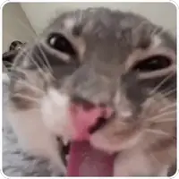

Fernanda,
Pensando bem, acho que tudo isso começou por culpa da inteligência artificial.
Porque até então você era alguém com quem eu jamais imaginava que teria alguma coisa.
E aparentemente, quando você pensava em mim, era mais ou menos assim: 😤
(Exatamente assim kkkkk.)
Até que um belo dia eu resolvi reclamar que você tinha deixado seu DEV favorito de lado e me trocado pela IA.
Era para ser só uma piada.
Claramente deu errado.
Ou deu certo demais, dependendo do ponto de vista kkkkk.
Porque depois disso a gente simplesmente começou a conversar.
E foi acontecendo de um jeito tão natural que eu nem sei dizer exatamente quando deixou de ser só aquela zoeira entre a gente e começou a virar parte do nosso dia.
Vieram você dizendo que eu demorava HORRORES para resolver as coisas, acusação gravíssima e até hoje sem provas.
Você dizendo que eu era um vagabundo porque fazia home office.
Os “CADÊ VOCEEEEEEEEEE” quando eu não estava presencial ou simplesmente sumia.
Vieram as conversas sobre trabalho, sobre a vida, sobre coisas importantes e sobre uma quantidade completamente desnecessária de assuntos idiotas kkkkk.
E eu fui descobrindo suas versões.
“Boazinha”, informação que até hoje considero questionável.
Audaciosa.
Ousada.
Amorzinho.
Espertinha.
Perigosa...
E aquela lista só aumentava.
A gente nunca teve aquele momento de:
“Agora vamos começar a nos conhecer.”
A gente simplesmente foi se conhecendo.
Uma piada idiota, um “cadê você?”, uma provocação, uma conversa aleatória e depois outra.
Até que falar com você simplesmente virou parte do meu dia.
E, sem eu perceber direito quando aconteceu, aquela mulher que me enxergava assim 😤 começou a me enxergar assim 🤪.
Acho que foi uma evolução.
Não sei se exatamente para melhor, mas foi uma evolução kkkkk.
Aí já era.
Vieram os apelidos também.
Você começou com momo, neném, paixão, príncipe, neneco...
E eu fui de amor, princesa, amorzinho...
E no meio disso apareceu a Oncinha, que às vezes era mansa e às vezes resolvia mostrar as garras, normalmente sem aviso prévio kkkkk.
Vieram também os carinhos, os ciúmes, os cheirinhos, os beijinhos e o famoso “grrrr” que até hoje continua devendo sua versão em áudio.
E, no meio disso tudo, a gente conseguiu criar uma intimidade que até hoje não sabemos explicar como.
Só que em algum momento aconteceu uma coisa que eu definitivamente não tinha planejado:
eu comecei a gostar de você.
E nem sei dizer exatamente quando.
Foi acontecendo aos poucos.
Quando alguma coisa acontecia no meu dia e eu pensava em te contar.
Quando comecei a perceber seus sumiços.
(Posso ser louco, mas sou esperto.)
Quando uma mensagem sua conseguia mudar meu humor.
Quando sentir sua falta começou a acontecer rápido demais kkkkk.
Até que eu percebi que já não estava falando com você só porque era divertido.
Eu queria te conhecer cada vez mais.
E foi aí que eu percebi que tinha me ferrado kkkkk.
E acho que isso explica perfeitamente o título que acabou surgindo:
Princesa do Apocalipse.
Porque “princesa” sozinha seria boazinha demais para alguém que conseguiu instaurar um verdadeiro caos na minha cabeça em tão pouco tempo kkkkk.
Você chegou quietinha e, quando fui perceber, o apocalipse já estava instaurado.
Princesa sim. Só que do Apocalipse.
Se você chegou até aqui, parabéns.
Sobreviveu a mais um dos meus textões kkkkk.
E tudo isso existe por causa de uma solicitação extremamente humilde que você resolveu fazer:
“Quero acordar com um texto bem lindo de você dizendo o quanto é apaixonado em mim e o quanto sou perfeita e não erro nunca.”
E eu respondi:
Vou fazer melhor
E eu ja pensei na ideia
E vou te provar agora
💙💛
Depois vc vai entender
Então aqui está.
Sobre você nunca errar, infelizmente eu não posso assinar embaixo.
Isso aqui é um documento oficial e tenho uma reputação profissional a preservar kkkkk.
Mas sobre o resto...
Eu gosto muito de você, Fernanda.
Da sua versão carinhosa e da maluquinha.
Dos seus “amor”, “neném”, “príncipe”, “neneco”...
Das provocações, dos cheirinhos e desse seu jeitinho todo estranho que eu fui gostando cada vez mais.
Então, sobre estar apaixonado...
Acho que você conseguiu sua resposta kkkkk.
Eu podia ter mandado só um textinho no WhatsApp e pronto.
Mas como eu falei que ia fazer melhor, tive que sustentar a promessa kkkkk.
E eu já tinha falado para você não duvidar de mim.
Você ainda estava descobrindo com quem estava mexendo kkkkk.
Então pronto.
Eu disse que faria melhor. 💙💛
Agora você entendeu.
E quanto à parte de você ser perfeita...
Você é maluquinha.
Estranha.
Descompensada.
Impossível às vezes.
Dona da razão e jamais da inocência.
Mas...
é a minha perfeitinha do seu próprio jeito.
E, obviamente...
minha Princesa do Apocalipse.

Hendricck
P.S.: “Perfeitinha” não significa “não erra nunca”. Não utilize este documento como prova em discussões futuras.
P.S. 2: O áudio do “grrrr” continua pendente.
P.S. 3: E pensar que tudo isso começou porque você resolveu trocar seu DEV favorito por uma IA kkkkk.
Talvez tenha sido uma boa decisão. Só dessa vez.